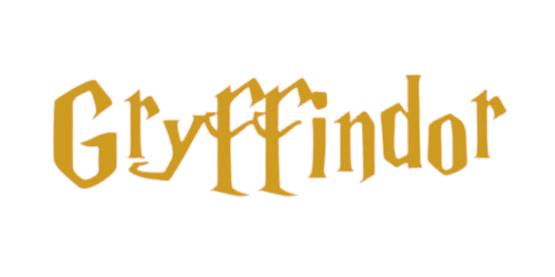
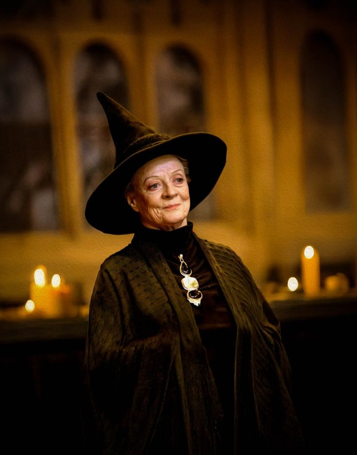
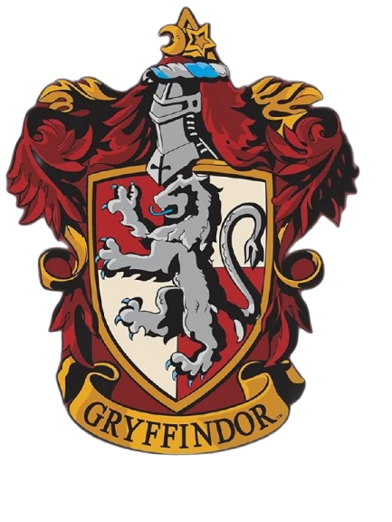
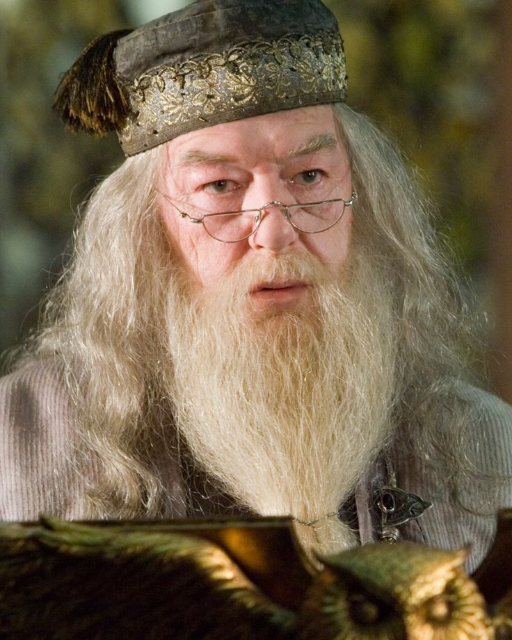
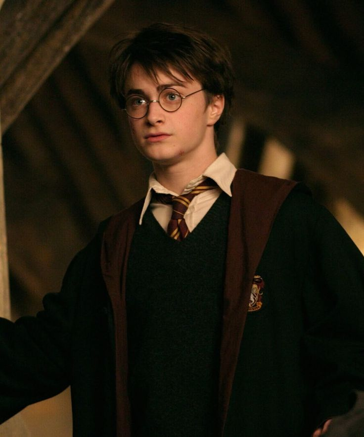
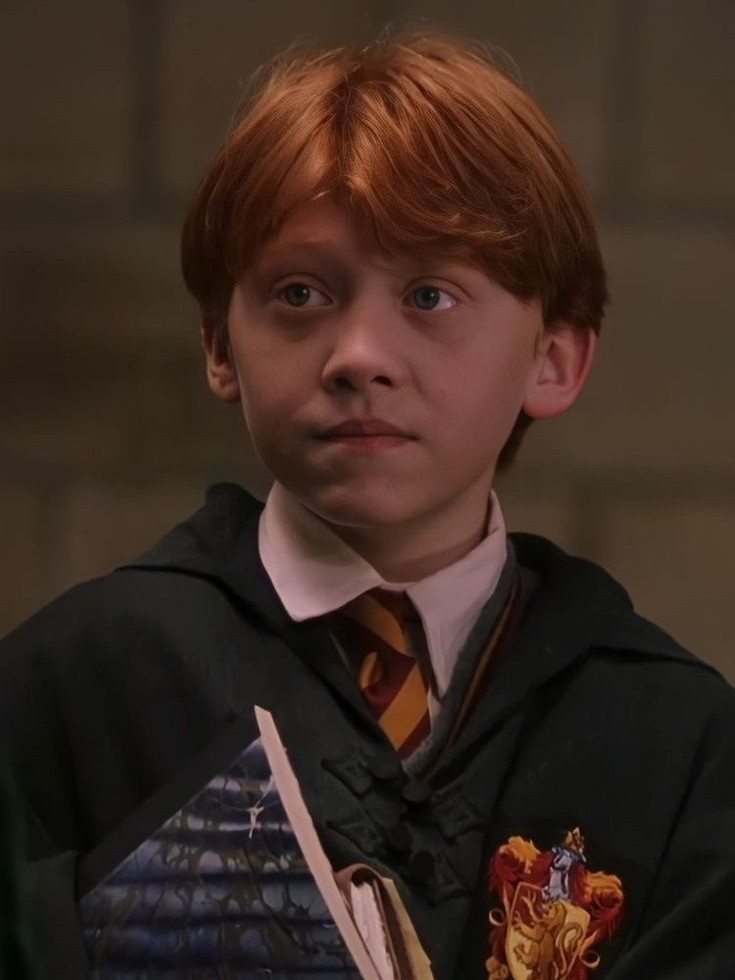
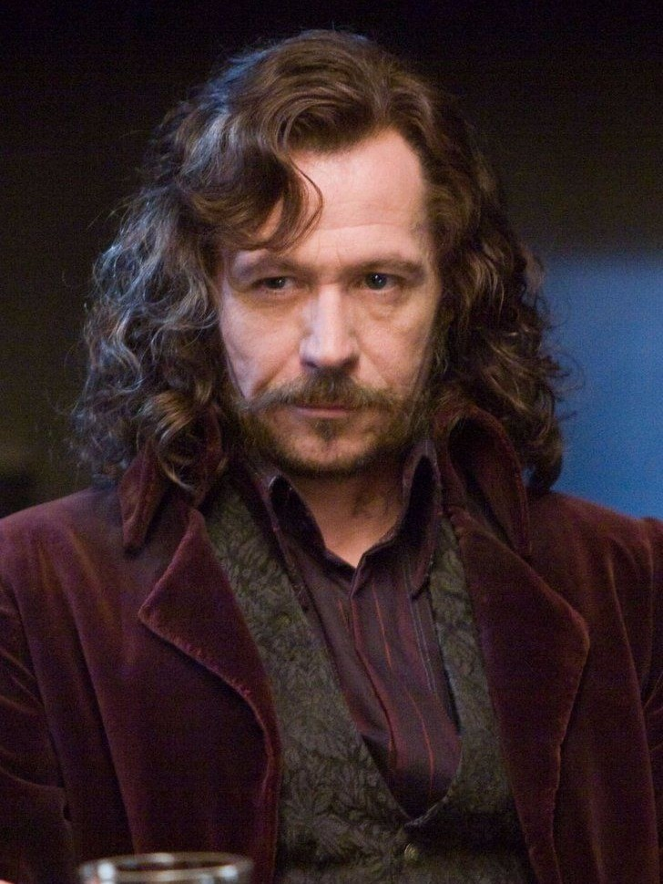

"Quem sabe sua morada é a Grifinória Casa onde habitam os corações indômitos. Ousadia e sangue-frio e nobreza Destacam os alunos da Grifinória dos demais." — O Chapéu Seletor

Diretora da Casa
Minerva McGonagall

Fundador
Godrico Gryffindor

Cores
Vermelho e Ouro
Os grifinórios são impulsionados pelo coração e pela intuição moral. Eles valorizam profundamente a honestidade, a lealdade e o senso de justiça. Embora sejam frequentemente vistos como heróis, sua ousadia e determinação podem, por vezes, levá-los a agir por impulso ou com imprudência
Membros Notáveis

Alvo Dumbledore

Harry Potter

Rony Weasley

Sirius Black